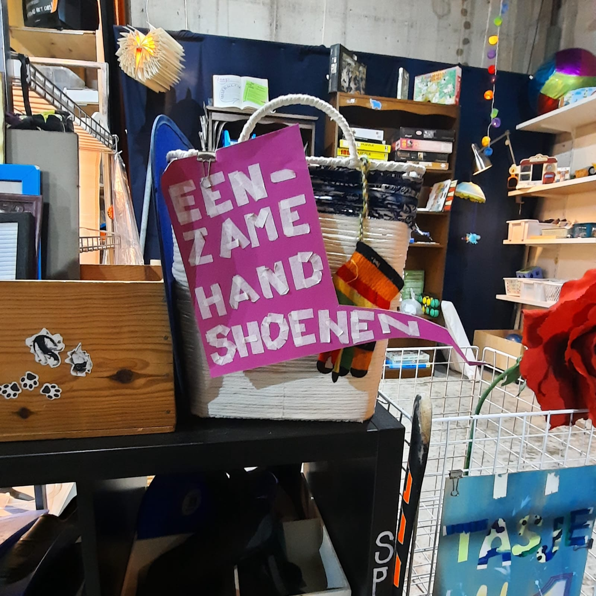

Weggeven voor een Betere Toekomst
Bij UPB geloven we sterk in de kracht van delen. Door items die je niet langer nodig hebt weg te geven, kun je een positieve impact hebben op zowel je gemeenschap als het milieu.
Waarom Weggeven?
Het weggeven van kleding en spullen die je niet meer gebruikt is een geweldige manier om:
- Anderen te helpen: Jouw ongebruikte items kunnen een verschil maken in het leven van mensen die het minder hebben. Of het nu gaat om kleding, huishoudelijke artikelen of speelgoed, kun je anderen ermee gelukkig maken.
- De afvalberg te verminderen: Door items weg te geven in plaats van ze weg te gooien, draag je bij aan het verminderen van afval en het behoud van kostbare natuurlijke hulpbronnen.
- Bij te dragen aan een circulaire economie: Het hergebruik van spullen is een belangrijk aspect van een duurzame levensstijl. Je verlengt de levensduur van items en helpt de omgeving door deze niet weg te gooien of te vernietigen.
Door het geven leer je een waardevolle bijdrage aan het creëren van een duurzaamere toekomst voor jezelf en de mensen om je heen.
